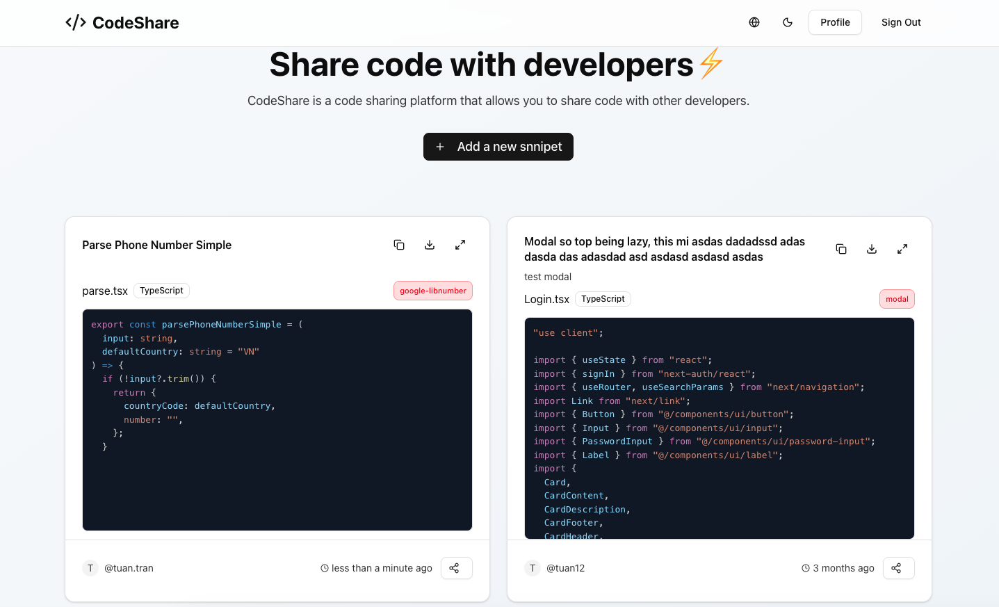
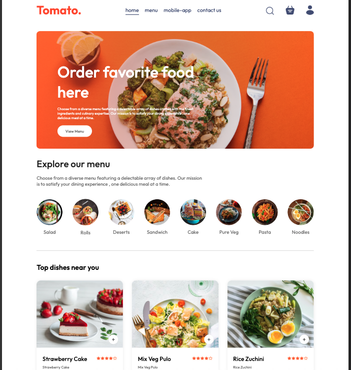
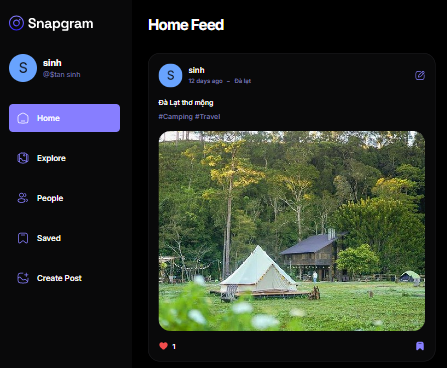
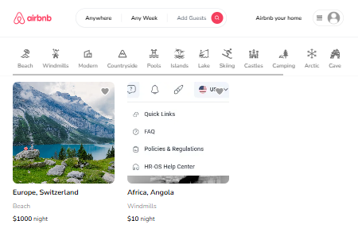
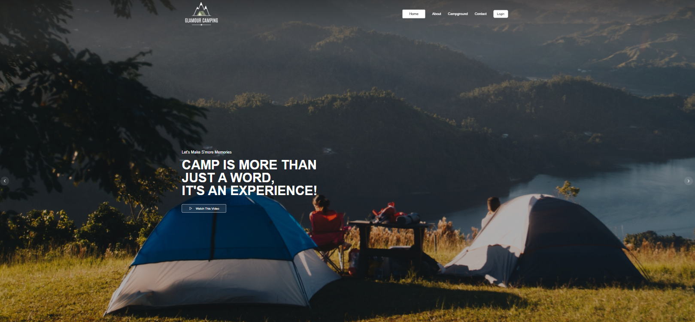
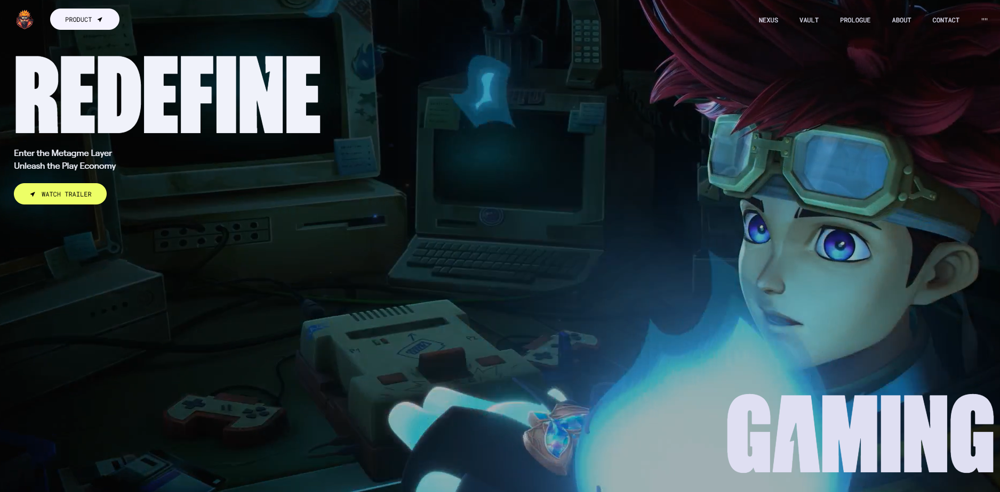

React.js, Next.js, TypeScript, JavaScript ES6+, HTML, CSS, SCSS, Tailwind CSS, Ant Design, responsive UI, accessibility basics.
Hi, I'm Sinh
frontend developer building scalable React & Next.js products


Frontend Developer
Frontend Developer with 4+ years of experience building enterprise web applications serving 1,000+ users. Strong experience with React, Next.js, TypeScript, Tailwind CSS and micro-frontend architecture. Comfortable owning frontend features end-to-end, working closely with backend and product teams to deliver stable, maintainable, and scalable user interfaces for complex business domains such as HR systems.
Skills
Redux Toolkit Query, Redux Saga, Zustand, React Query, RESTful APIs, form workflows, caching, async data handling, error states.
Micro-frontend architecture, reusable component systems, feature ownership, maintainable folder structure, performance-minded UI.
Git, GitHub, GitLab, Storybook, Vite, Webpack, Babel, code review, debugging, documentation, production issue analysis.
Practical use of AI tools such as Codex and Claude to accelerate code review, refactoring, debugging, test ideas, documentation, and technical exploration while keeping final decisions grounded in engineering judgment.
Experience
Company Setup Module
Developed Company Setup Module to configure organizational structure, roles, and default settings for new tenants during onboarding.
React.js, Tailwind CSS, Zustand, TypeScriptTicket Management
Developed a robust platform for employees to submit, track, and resolve payroll, IT, HR, and system-related requests through a centralized workflow.
Next.js, Tailwind CSS, Redux Toolkit Query, TypeScriptTimesheet Management
Built a tool to record and manage employee working hours, project contributions, productivity metrics, payroll processing, and performance evaluation.
React.js, Ant Design, SCSS, Redux SagaAdmin Portal
Built HR administration interfaces for employee data, organizational policies, system configuration, accurate records, workflows, and access control.
Next.js, Tailwind CSS, Redux Toolkit Query, TypeScriptTimeoff & Employee Management
Engineered leave request, approval, contact directory, and organizational hierarchy features to improve transparency and collaboration.
React.js, Next.js, Ant Design, SCSS, Redux SagaProjects
A web-based platform that allows developers to create, manage, and share reusable code snippets with syntax highlighting and language tagging.
Next.js, TypeScript, Tailwind CSS, Node.js, MongoDB
A responsive food delivery demo application designed to showcase a modern UI/UX for online food ordering.
React.js, Tailwind CSS, Node.js, MongoDB
A social media application that allows users to create, edit, like, and save posts through a simple and seamless experience.
React.js, Tailwind CSS, Appwrite
An online booking platform inspired by Airbnb, with property listings, filtering options, and booking flow.
Next.js 13 App Router, Tailwind CSS, Prisma, MongoDB, NextAuth
A modern booking interface for campgrounds, optimized for search, reservation, details, and fast booking actions.
Next.js, Tailwind CSS
A web project showcasing smooth interactive animations, transitions, parallax effects, and scroll-based motion with GSAP.
React.js, Tailwind CSS, GSAP